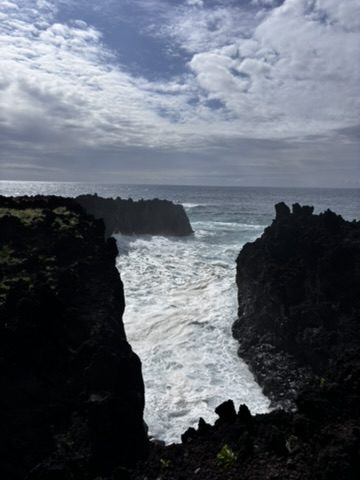
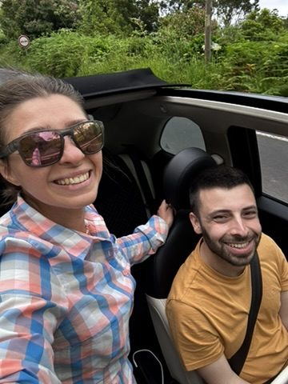
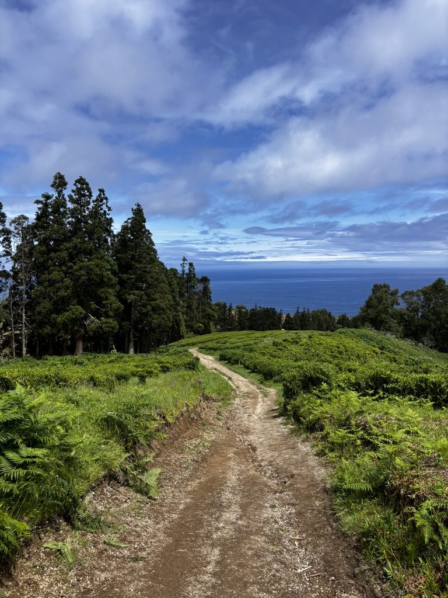
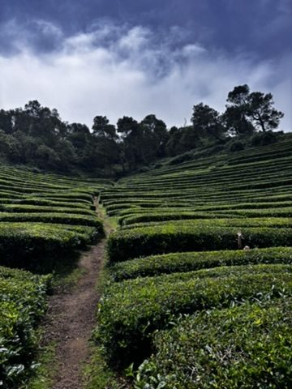
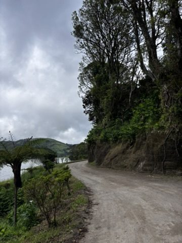
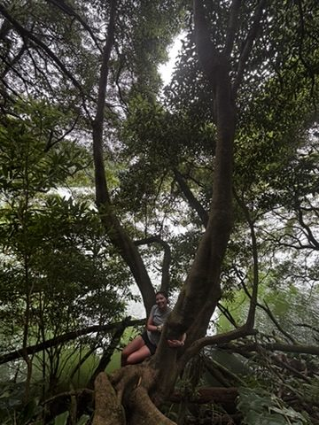
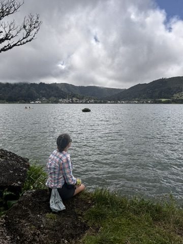

I arrived at the car rental desk in Sao Miguel airport happy, rested, a little excited. I had a flight with a beautiful sunrise, I had two weeks ahead on an island that everyone said you need a car to explore properly.
The man at the counter looked at my licence and said: "Hmm. Cannot be done. Your driving licence is expired."
I froze.

The ocean here doesn't care about your licence or your plans. It just does its thing.
I hadn't known. Which made it worse — I might have been driving in this condition already. But the immediate reality was simpler: I couldn't get the car. And everyone had told me that without a car, you can't do much in Sao Miguel. The public bus is limited, the last one back to town leaves at 4pm, and the most dramatic parts of the island are not reachable on foot.
What I did instead
I posted a message in a travellers group — the same approach that had worked in Tenerife. I said I was on the island for two weeks, had no car, and was looking for someone to explore with.
Within hours, there was P.

Living my absolute best life. Expired licence. No car. No plan. Perfect company.
We hiked together, ate together, explored the island together. P was only there for one week. On his last day, the three of us met for one final ride — and right before P left, I met Y, who had just arrived and had a car and was eager to explore. I invited Y to join us for the last afternoon.
P left. Y stayed. The second week began.

The colours here don't look real. They are. The island just does this.
I went with Y to discover the parts of the island I hadn't seen yet. It is a small island — you can cover a lot of it — but weather and company change everything. The same viewpoint in different light, with a different person, is a completely different place.

Hello from the tea plantation. Find me in the bushes! Worth a stop.
Horses and a waterfall
One afternoon Y came to find me, excited. He had discovered a ranch nearby that offered horse riding. Apparently people come to the island specifically for intensive riding courses.
I had ridden before, but always inside a training area — never out in open terrain. Here there were more than twenty horses and we rode for two hours on the hills. The island spread out around us. I felt, in that specific way that only happens sometimes, completely at one with what I was doing. No resistance. Just movement and the animal and the landscape.

Raw nature, unfiltered. The kind you earn by showing up without a plan.
Another day, Y challenged me to swim toward a waterfall and go behind it.
I was hiking, fully geared — not the ideal moment for swimming. I usually wouldn't have done it. Too much to carry, too much to think about. But I didn't think twice.
I went.

Sometimes you just need to hug a tree. No further explanation required.
Behind a waterfall, the water falls around you and the world disappears. It is loud in a way that empties your head completely. For a few seconds, there is nothing except the cold and the sound and the fact of being there.
Magic is the only word I have for it. And I nearly didn't go because I didn't want to get my hiking boots wet.
The thing about plans
The car would have given me independence. What the no-car situation gave me was P, then Y, then horses, then the waterfall.

Chill down for a bit. Stay with yourself. The island teaches you this whether you want it to or not.
I'm not saying things always work out — they don't. But I've learned to pay attention to the moments when a problem removes one option and something better walks in through the gap. It happens more often than you'd expect, if you stay open to it and don't spend the whole time mourning what you lost.
Unplanned trips are the best, if you dare a bit.